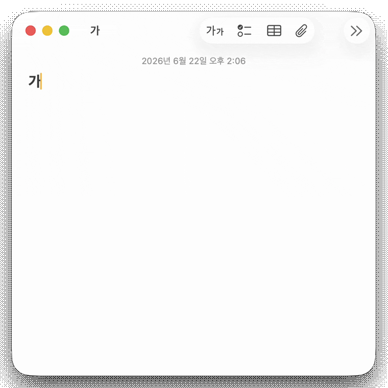
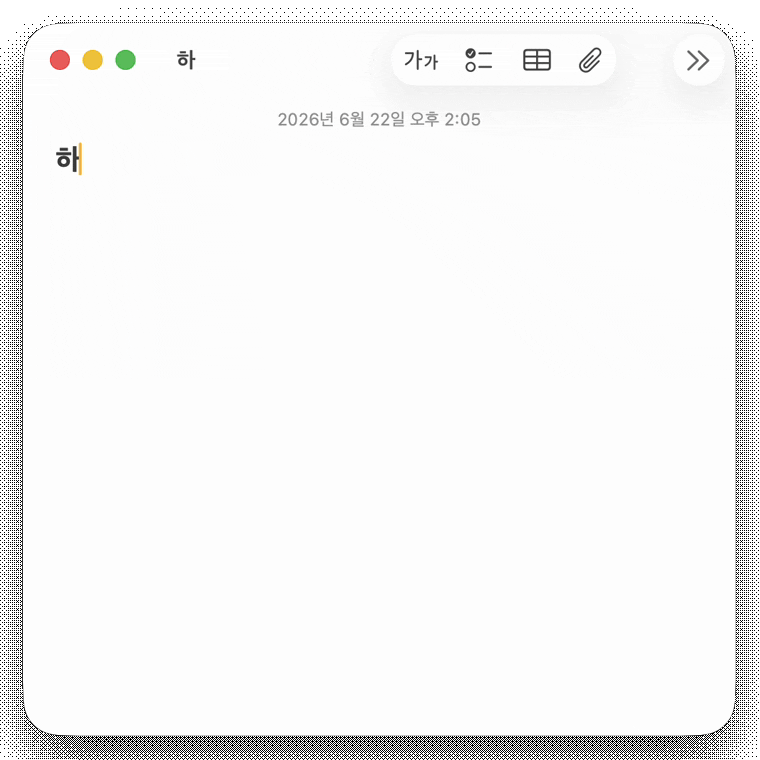
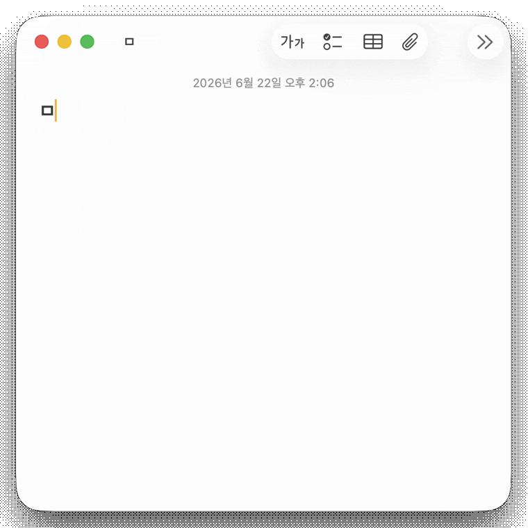

음절 → 한자Syllable → Hanja
한 글자씩 한자로. 한 → 韓 · 漢 · 寒 Each syllable to its Hanja. 한 → 韓 · 漢 · 寒
입력기를 바꾸지 않아도, 단축키 하나로 커서 앞의 한글을 한자·특수문자로 그 자리에서 바꿔 주는 가벼운 메뉴바 앱이에요. A lightweight menu-bar app. One hotkey turns the Hangul before your caret into Hanja or special symbols, in place, without switching input sources.
$ brew install --cask SJY051/tap/hanjakey
DMG 다운로드Download DMG
macOS 14+
커서 앞 어절을 알아서 잡아 대한민국 → 大韓民國, 한자 → 漢字. 뜻과 함께 빈도순으로 정렬돼요. It grabs the word before your caret, 대한민국 → 大韓民國, 한자 → 漢字, ranked by frequency with meanings.


한 글자씩 한자로. 한 → 韓 · 漢 · 寒 Each syllable to its Hanja. 한 → 韓 · 漢 · 寒

자모로 특수문자까지. ㅁ → ※ ◎ □. macOS 입력기엔 없는 기능이에요. Even jamo to symbols. ㅁ → ※ ◎ □. Something macOS’s own IME can’t do.
두 가지 방법 모두 한 줄이면 끝나요.Either path takes about one line.
설치와 업데이트가 가장 간단합니다.The simplest way to install and stay up to date.
$ brew install --cask SJY051/tap/hanjakey
DMG를 열고 응용 프로그램 폴더로 드래그하세요.Open the DMG and drag HanjaKey to Applications.
최신 DMG 받기Get the latest DMG처음 한 번만 접근성 권한을 켜 주세요 (시스템 설정 → 개인정보 보호 및 보안 → 손쉬운 사용). 다른 앱의 텍스트를 읽고 바꾸는 데 필요해요. Just grant Accessibility once (System Settings → Privacy & Security → Accessibility); HanjaKey needs it to read and replace text in other apps.
네이티브 앱, Electron 앱(Slack·Discord 등), 브라우저까지 대부분의 macOS 앱에서 작동합니다. 터미널은 편집 가능한 접근성 텍스트를 내주지 않아 지원하지 않아요. Native apps, Electron apps (Slack, Discord), and browsers, most macOS apps. Terminals are the exception; they don’t expose editable accessibility text.
코드는 MIT. 번들 데이터는 각 출처의 라이선스를 그대로 따릅니다. The code is MIT. Bundled data keeps each source’s own license.
표준국어대사전·위키낱말사전은 CC BY-SA(동일조건변경허락), 국립국어원 빈도조사는 KOGL 제1유형(출처표시) 조건으로 배포됩니다. The dictionary and Wiktionary data are CC BY-SA (ShareAlike); the NIKL frequency survey is KOGL Type 1 (attribution). Keep those terms when redistributing.
HanjaKey가 도움이 됐다면 토스·카카오페이로 한 잔 보태 주실 수 있어요. 부담 없이, 마음만으로 충분합니다. If HanjaKey helped, you can chip in via Toss or KakaoPay. Entirely optional, no pressure.